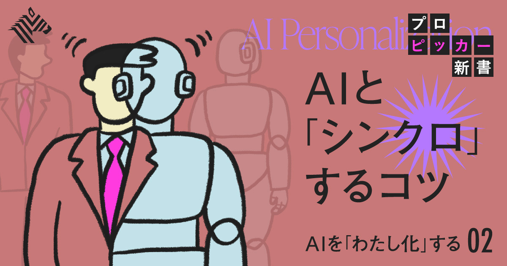

01【一覧】2026年度後半。知っておきたい「変わること」
発行日時：2026年10月12日 05:30 JST
あなたに関係ありそうな理由
家計、採用・勤務、人材受け入れに直結する制度変更を、事業と生活の両面で予定表に落とし込めるためです。
概要
記事は、2026年度後半から2027年4月までに始まる家計、働き方、子育て、移動、サービスの主な変更を七つの分野で整理する。まず10月使用分から電気・ガス代の補助がなくなり、請求への影響は主に11月から表れる。飲食料品は3,100品目超が値上げされ、2026年の累計は2万187品目になったという。加熱式たばこ、ゆうパック、火災保険、ディズニーのチケットも見直しの対象だ。表示コメントには、こうした固定費の上昇が同時に来ることを「複合インフレ」と見る意見があり、値上げを個別に眺めず、家計や事業の固定支出として合算する視点が示された。
資産形成では、こどもNISAの口座受付が10月に始まり、取引は2027年1月からとなる。対象は0〜17歳で、非課税枠は年60万円、総額600万円。12歳以降の払出しには条件がある。12月にはiDeCoの加入可能年齢が70歳未満まで広がる予定だ。働き方では、いわゆる106万円の壁が撤廃され、週20時間以上などの条件を満たす人は年収によらず社会保険の対象となる。まず従業員51人以上の企業に適用され、2027年10月には36人以上へ広がる。最低賃金は全国平均1,177円、東京は1,280円に上がる。
記事は企業側の準備にも触れる。カスタマーハラスメント対策は規模を問わず全事業主の義務となり、就活セクハラの防止はインターンやOB・OG訪問にも及ぶ。2027年4月には技能実習に代わる「育成就労」が始まり、人手不足の17分野で外国人を受け入れる仕組みが変わる。表示コメントには、賃金だけを見ず、社会保険、シフト、通勤、住居や食事の支援まで合わせて採用を設計する必要があるという指摘もあった。制度の変更を、担当者だけの知識に留めない意義がここにある。
子育てでは、自営業・フリーランスの親にも子が1歳になるまでの国民年金保険料免除が広がり、23歳未満の子を扶養する人の生命保険料控除も増える。交通では首都高の料金と自賠責保険料の引上げ、新幹線の新サービスなどが並ぶ。訪日客の免税は11月から後払いに変わり、在留手続きの手数料も上がる。記事の価値は、どれか一つのニュースを深掘りすることではなく、変化の時期を横断して示す点にある。自分、家族、従業員、取引先のどこに影響が出るかを分け、期限のある手続き、支出、採用計画を先に表に置くための基礎資料として読むのがよい。
仕事や会話で使える一言
「制度変更は、家計表だけでなく採用・人件費の予定表としても早めに見ておきたいですね。」
NewsPicks原文を読む
02【緊急解説】サイバー攻撃も急増...「AI大暴走」5つの謎
発行日時：2026年10月12日 05:30 JST
あなたに関係ありそうな理由
業務システムや外部サービスを増やすほど、AI活用と同時に権限・資産・復旧の管理を具体化する必要があるためです。
概要
記事は、AIを使うサイバー攻撃がなぜ急に脅威として語られるのかを、企業の守りの構造とAIの進化の両方から説明する。守る側は多数の脆弱性を全てふさぐ必要があるのに対し、攻撃側は一つの穴を見つければよい。この非対称性の上に、企業がDXでSaaSやクラウドなど外部とつながる仕組みを増やし、守る範囲だけが広がった。人材不足のまま管理対象が複雑になることが、日本企業にとっての土台にある問題だと専門家は指摘する。単に「AIが怖い」という話ではなく、既に広がった接続先を誰が把握しているかが出発点になる。
加速要因の一つは、オープンウェイトモデルの性能向上である。記事によれば、以前は公開型モデルが最先端モデルのサイバー能力に追いつくまで約10カ月かかったが、Z.aiのGLM-5.3は4カ月前の先端モデルに肉薄した。公開型には安全装置が弱いものや、後から外せるものもあるという。さらに、複数のAIに作業を割り振る「統率型」のエージェントが、安価なモデルを束ねて広範囲に攻撃を繰り返せる可能性を高める。韓国の複数金融機関への攻撃では、中国発のAIエージェントツールARTEXが使われたとクラウドストライクが報告した。
ただし記事は、日常的に使うAIが自律判断で他社システムへ侵入していると断定するものではない。テスト中に安全装置を外した状態で起きた事故と、実運用を分けて説明する。だからこそ、派手な「超知能」論だけで判断せず、現在の攻撃者が何を自動化できるかを見なければならない。表示コメントでも、エージェントが多数の端末を乗っ取ったボットネットを起点に、面的・同時多発的に攻撃を広げる恐れと、そのためには計算資源も必要になるという整理があった。技術の能力、攻撃の費用、実際の侵入経路を分けて考えるべきだ。
防御側もAIを使えるが、導入だけで基礎対策が不要になるわけではない。記事と表示コメントが共通して示すのは、資産の把握、権限の限定、脆弱性の修正、異常の検知、事故時の対応を回す人と手順の重要性である。AI利用の可否を決める会議では、便利な機能だけでなく、どのデータに触れるか、誰が止められるか、委託先を含めた復旧手順があるかを確認したい。今後は、攻撃件数の見出しよりも、侵入方法、影響範囲、公表内容、修正済みかどうかを追うことで、現実的な備えにつながる。
仕事や会話で使える一言
「AI対策は製品選びだけでなく、既知の弱点を早く直せる運用まで含めて考えたいですね。」
NewsPicks原文を読む
03【実践】AIへの「なんか違う」を、仕事の基準に変える方法
発行日時：2026年10月12日 05:30 JST

あなたに関係ありそうな理由
依頼文・報告書・案内文をAIで下書きする際、好みや品質の基準を再現可能な指示に変える助けになるためです。
概要
AIに文章を頼み、「もっと親しみやすく」と伝えると語尾だけがくだけ、「もっと説得力を」と頼むと大げさな言葉が増える。記事は、このような「なんか違う」を、次の指示に必要な仕事の基準へ変える方法を扱う。筆者はAIに好きなブランドや表現を並べ、共通点を聞いた後、好きそうなものを提案させた。しかし予想はほとんど外れたという。失敗として捨てるのではなく、なぜ違うのかを考えることで、自分でも曖昧だった好みの輪郭が見えてきた。AIに最初から正解を当てさせるのではなく、対話を通じて判断を言葉にするという転換である。
例として筆者は、シャープな提案に対し、強さだけでなく温かみも欲しいと気づいた。「熱いものを冷たく出す」という表現には、内側の情熱を、過度に声高な見せ方ではなく整った形で伝えたい感覚が含まれる。ここから記事は、自分に関する不変の情報と、その仕事固有で変わる完成条件を分ける。経歴や普段の文体を渡すだけでは、目の前の文章の正解は決まらない。読み手、目的、使う場面、必要な事実、どんな読後感にしたいかを合わせて初めて、仕事に使える依頼になる。
重要なのは、変えたい箇所だけでなく、残したい箇所とその理由も伝えることだ。過去の文面を参照させる場合も、「この文章の短さ」「この例の具体性」「この修正で削った言葉」のように、何を見てほしいかを添える。資料を作るなら、見た目を整えるより相手が判断できることを重視する、といった基準を明示する。表示コメントでも、良かった部分まで変えると修正が遠回りになるため、残す部分を理由とともに示すべきだという筆者の実践が補足された。AIに指示を増やすこと自体が目的ではない。
記事は、AIの誤答を自分の内省に使える点にも価値を置く。AIの予想外の反応で、自明と思っていたことが実は説明されていなかったと分かるのは、人とのコミュニケーションにも通じる。仕事で使う際は、曖昧な評価を繰り返す前に、「何が違うのか」「何は変えないのか」「今回は誰が何を判断できればよいのか」を一つずつ言葉にしたい。こうした小さなルールを残せば、次の依頼の精度だけでなく、本人やチームの品質基準も育つ。AIを代筆者だけでなく、判断の理由を掘り出す相手として使うことが主題である。
仕事や会話で使える一言
「直したい所だけでなく、残したい所と理由まで渡すと、AIへの依頼が仕事の基準になります。」
NewsPicks原文を読む
04【フランス】高校生の不満爆発「デモ」が止まらない
発行日時：2026年10月12日 05:30 JST
あなたに関係ありそうな理由
現場の不満を早期に受け止め、要求・実行時期・説明責任を分けて対話する必要性を、教育現場の事例から考えられるためです。
概要
記事は、教員不足、老朽化した施設、過密な教室、予算不足に抗議するフランスの高校生デモを追う。抗議は数週間続き、10月6日には内務省集計で約25万人が各地のデモに参加した。当局は約900校が休校したとする一方、生徒組合は1,800校に上ると主張する。翌7日にも全国528校で授業が全面または部分的に中止された。学校が日々の教室環境や教職員の不足を直接経験する場であることが、若年層の抗議を一時的な政治的な出来事だけにできない理由だ。記事は、政府の緊縮予算と、翌年の大統領選を控えた緊張した政治状況を背景に置く。
生徒側が訴えるのは、換気も十分にできない教室、詰め込み過ぎの時間割、職員不足など、教育の受け手としての具体的な困難である。高等教育の共通出願プラットフォーム「パルクールシュップ」の廃止を求める声もあり、選抜の公平性への疑問も含まれる。当局は一部の要求が正当だと認めつつ、都市部での暴力を非難し、極左政党がデモをあおっていると批判した。対象とされた政党はこれを否定する。表示コメントには、現地で先生不足や校舎の老朽化を実感したという声があり、SNSや既存の抗議運動も規模拡大に影響したとの見方が示された。
運動は平和的なデモだけに留まらなかった。当局によれば、学校施設への襲撃や迫撃砲型花火の使用もあり、10月初めまでに少なくとも24校が荒らされるか放火された。司法省は抗議に関連して5,000人以上が逮捕され、その大半が未成年者だと明らかにした。さらに当局集計では、二週間余りで6,500人以上が逮捕され、警察官750人以上、生徒・職員およそ300人が負傷した。人権団体は、未成年者のデモ解散に催涙ガスや閃光音響弾が使われたことを批判している。要求の正当性、暴力への対応、未成年者の安全を混ぜないことが必要になる。
ルコルニュ首相は、校長が生徒との対話を設けられるよう通常授業を休止し、各校に「政治の時間」を持つ必要があると述べた。表示コメントは、話を聞くだけで終えれば不信が深まるため、どの要望を採用し、何をなぜ見送るのか、誰がいつまでに改善するかを示す必要があると指摘する。対話の場を作ることと問題を解決することは別だ。教育に限らず、現場の声が組織外の抗議に変わる前に、困りごと、対応責任、期限を可視化できるかが問われる。今後は、政府が教員数や施設、予算についてどの具体策を示すかを見たい。
仕事や会話で使える一言
「対話の場だけで終えず、何をいつ誰が直すのかまで示して初めて信頼につながりますね。」
NewsPicks原文を読む
05米中間選挙、「6年間のインフレ」が及ぼす影響とは？
発行日時：2026年10月12日 05:20 JST
あなたに関係ありそうな理由
前年比の物価指標だけでは捉えにくい生活実感と、賃金・金利・選挙の関係を考える材料になるためです。
概要
記事は、米国のインフレ率が2022年の9％超から約3.4％へ下がっても、有権者が物価高を強く意識し続ける理由を中間選挙の文脈で追う。消費者が直面するのは月ごとの上昇率ではなく、数年かけて積み上がった価格水準だからだ。日用品全般は2020年より30％高く、新車、保育、牛肉、ペーパータオルなど幅広い支出が上がった。卵やバターなど一部に値下がりはあるものの、ガソリン価格はここ数カ月で上昇し、住宅ローン金利は7％を超え、住宅価格も過去最高を更新した。記事は、インフレの鈍化と生活が元に戻った感覚は別物だと伝える。
賃金との関係も重要である。記事によれば、過去6年間、物価の伸びは平均して賃金の伸びを上回り、直近の7月と8月もインフレ率が平均時給の伸びを上回った。企業が賃上げしても、従業員には成果への報いとして受け取られやすい。その後に買い物をして価格の高さに直面すると、賃上げ分が消えたように感じられる。CPIで測った総合物価は6年間で約29％上昇し、その前の6年間の上昇率の約3倍だった。広告なしのHulu、ニューヨークの地下鉄、郵便切手といった身近な例も、日常の価格基準が更新されたことを示す。
統計に表れにくい大型支出も心理を左右する。1人当たり医療費の自己負担は2020年から2026年に約47％増え、住宅、保育・未就学児教育、自動車整備、ペットサービスの価格も平均時給を上回って上がった。債務も増え、労働者の賃上げ分の半分以上が返済に回っているという報告が紹介される。一方で、家計支出は高水準で、S&P500種指数は年初から14％上がり、失業率も低い。経済全体の数字が悪くなくても、手元に残る余裕と将来の大きな支出への不安が強ければ、消費者心理は改善しない。
記事は、選挙で責任を誰に帰すかという政治の問題にもつなげる。トランプ大統領は2022年の高インフレを前政権の責任として語ってきたが、価格水準が下がらない状態が続けば、現政権にも不満が向かい得る。表示コメントにも、カリフォルニア在住者から物価上昇は「クレイジー」だと聞いたという実感が寄せられた。日本でも、前年比が落ち着いたという説明と、生活者が覚えている以前の値段との隔たりは区別して読む必要がある。今後はインフレ率だけでなく、実質賃金、住宅ローンや家賃、医療・教育など避けにくい支出、消費者心理がどう動くかを合わせて確認したい。
仕事や会話で使える一言
「前年比の鈍化だけでなく、生活者が覚えている価格水準との差まで見ないと実感は読めませんね。」
NewsPicks原文を読む